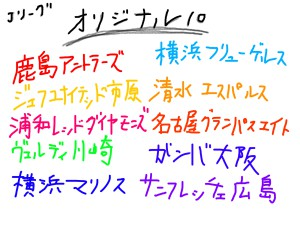
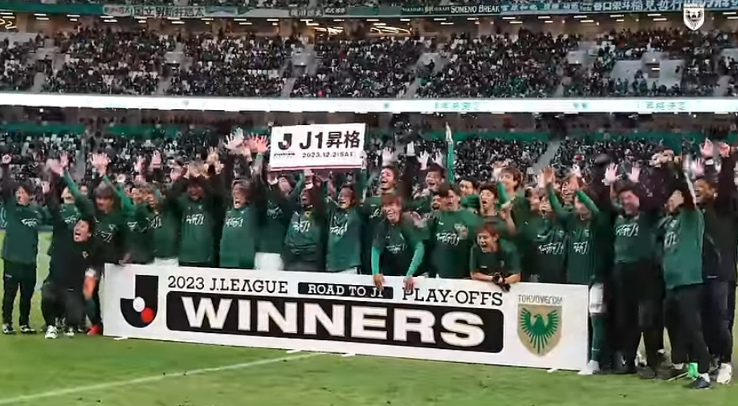
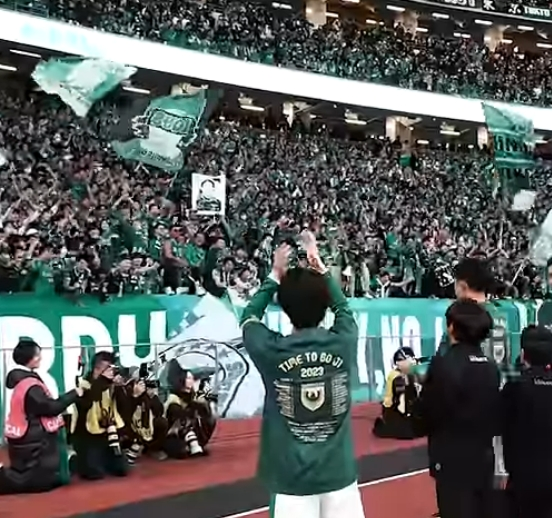
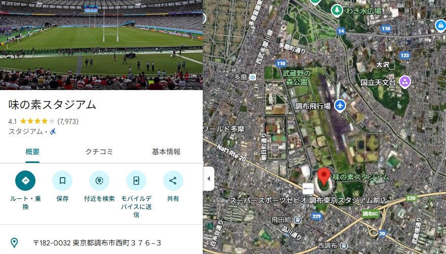
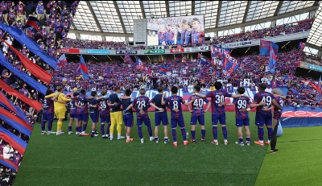
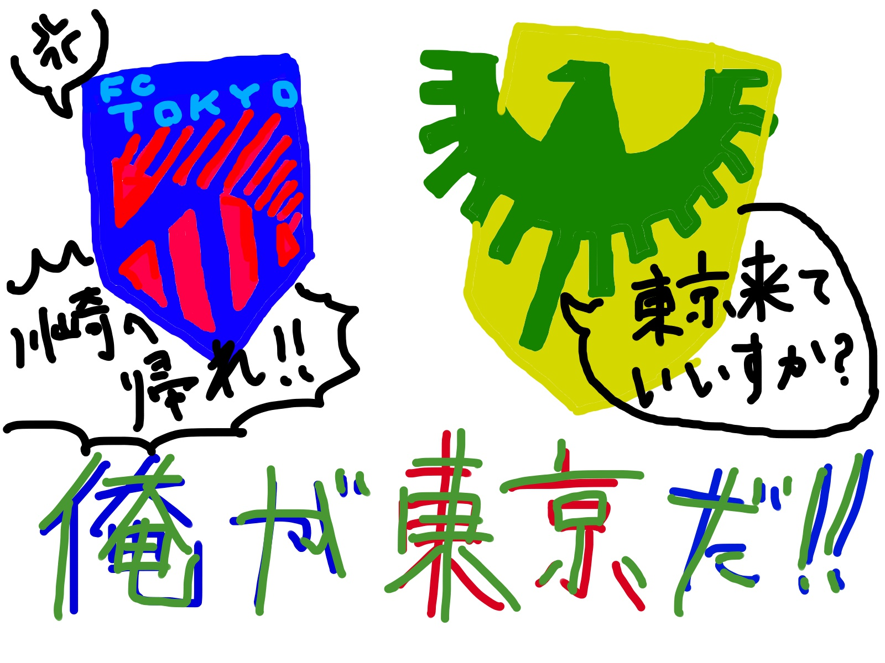
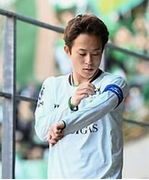
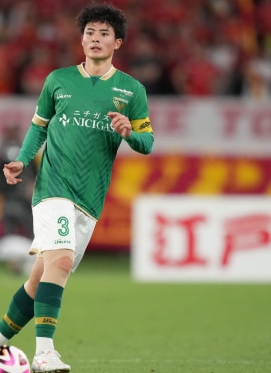
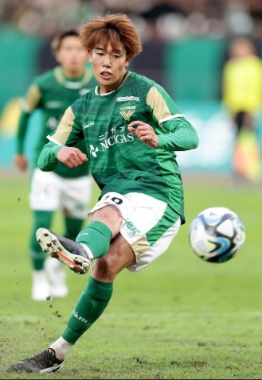
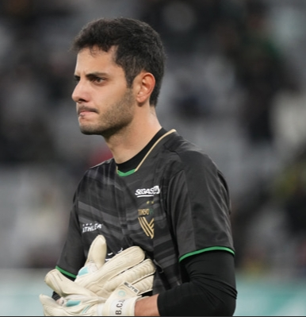

「東京ヴェルディ」とは東京都をホームタウンとし、味の素スタジアムを本拠地にかまえるjリーグのクラブチームです。
その特徴は、なんといっても「緑」!!
緑、緑、緑、、！
そうです、我々ヴェルディに関わる全ての人は、クラブカラーであるグリーンをこよなく愛しています。
「ヴェルディ」という名前も、ポルトガル語で緑を意味する「VERDE」が由来となっています。
とにかく、「東京ヴェルディ」といったら「緑色のjリーグのチームか!」と思ってください💚
東京ヴェルディはjリーグ開幕時から参加していたチームで、「オリジナル10(jリーグに参加した最初の10クラブ)」のひとつとして君臨しています。
jリーグ開幕当初は「ヴェルディ川崎」というチーム名でした。私は現在大学生なので当時のことはわかりませんが、私の親世代だと、 「日本の強いサッカーチームといえば、ヴェルディでしょ！」という印象を持っていた人も多かったらしいです。
それもそのはず。ヴェルディはなんと「jリーグ初代王者」というとんでもない称号を持っており、三浦和良選手を筆頭に、日本代表の選手が多く在籍していたそうです。
ただ、私の周りのサッカーに詳しくない友達に聞くと、「ヴェルディ」という名前はあまり聞きなじみがないようで、、、
jリーグ初期は圧倒的実力を誇っていたヴェルディですが、2008年に降格してからは15年もj2から抜け出せなかったそう。かなりの苦労があったようですね、、、
しかし、2023年は昇格プレーオフを勝ち抜き、16年ぶりのj1へ。
昇格後は「一年でj2に逆戻りしてしまうだろう」といった前評判を覆す堂々の6位フィニッシュ。
念願のj1帰還を成し遂げ、さらなる高みを目指す緑の勇者たち、、、それが「東京ヴェルディ」というチームです。
私は、東京ヴェルディが本当に大好きです。初めてヴェルディに出会ったのは、ニッパツ三ッ沢球技場でした。
ニッパツは「横浜fc」というクラブの本拠地。当時私はjリーグ観戦はじめたてで、「はえ~、こんな近所にサッカー場あるんだ、行ってみよ!」 みたいなノリで足を運びました。
私はホームの横浜fc側の席で観戦しました。横浜fcはj1残留を目指し、全力プレーでとっても頑張っていました。
がんばれぇ~
と私が手拍子で応援していた中、目線を反対側へ向けると、そこには緑の大群が見えました。
* * ***（太鼓の音）トーキョーヴェルディ!!!!!!!!!!!!!!
* * *** トーキョーヴェルディ!!!!!!!!!!!!!!!!!!!!!!!!!!!!!
私「!!??」
な、なんだこの声量は!?
私は圧倒されてしまいました。もちろん横浜fcもかなり応援に熱がありましたが、アウェイ側の「緑の大群」の応援がとにかくすごまじかったのです。
試合は0-0の引き分け。勝利が欲しかった両チームは少々サポーターのブーイングを浴びますが、最後まで分からない試合展開は見ごたえがありました。
これが、私が最初にヴェルディに出会ったときのエピソードです。
~
長々と私の話を述べましたが、ヴェルディの魅力を端的にいうと、「応援、情熱的プレー、ビジュアル」です。
サポーターの魂の籠った応援と選手たちのチームへの献身性はjリーグの中でもピカイチ。
ヴェルディのエンブレム→まじカッコイイです。ヴェルディのユニフォーム→まじカッコイイです。（緑×金は特に最高）
ヴェルディの魅力を語ればいくらでも話せてしまうので、とりあえずこんなところで終わります。
「味の素スタジアム」は東京ヴェルディの本拠地です。東京都調布市にあります。立地などの詳しい情報はgooglemapで検索すれば分かると思うので、 ここではまた違った情報をお届けします。
・FC東京の存在
みなさん、東京のjクラブと聞いて、思い浮かぶチームはどこですか?
私の友達だと、「FC東京」と答える人が多い印象です。
そうです。東京をホームタウンとするチームはヴェルディの他に、FC東京があります。
FC東京さんは1999年からjリーグに参戦。j1歴もかなり長く、ヴェルディがj2で苦戦していた間、j1でしのぎを削っていました。
長友選手や久保建英選手を輩出したパンチ力のあるチームで、かなり人気があるかと思います。
そして、何が問題かというと、このFC東京さんのホームスタジアムが、ヴェルディと同じ「味の素スタジアム」なんですよね。
先ほど、ヴェルディはもともと本拠地が川崎だったと述べました。ヴェルディはホームを「FC東京が台頭してから」味スタに移したのです。
これは、FC東京側からすると、「なんで俺らのところにヴェルディが割って入ってくるんだよ(怒)」って気持ちになっちゃいますよね。。。
そんなわけで、東京ヴェルディとFC東京の関係性はバチバチ。
両チーム同士が味スタで戦う「東京ダービー」は毎度白熱した試合になります。
私も実際に東京ダービーを観戦しましたが、普段の試合以上にスタジアムが殺気立っていました。
東京ヴェルディとFC東京は、両者ともに譲らないライバル関係なのです。
・はじめて味スタに足を運んだ感想
私が初めて味スタに行ったのは東京ダービーの時でしたが、正直味スタまわりは「FC東京色」が強かったです。
味スタの最寄り駅である「飛田給駅」（「とびたきゅう」と呼びます。私はずっと「ひだきゅう」と呼んでいて、恥をかいた記憶があります。）は FC東京のチームカラーである青赤の装飾が多めです。最初に味スタをホームとして置いたのはFC東京ですから、しょうがないのかもしれません。
個人的には、スタジアムとその周辺が緑一色で染められたホームを見てみたいものですが、味スタはとっても立派なスタジアムですので、観戦時には何の不便もありません。大満足です。感謝、感謝。
すべての選手を取り上げて、徹底的に紹介させていただきたいところではありますが、ここでは一部の注目選手を述べさせていただきたいと思います。
・森田晃樹 背番号７ MF
ユースからヴェルディ一筋、我ら緑の勇者を率いるキャプテンです。
個人的な感想ではありますが、森田選手のルックス、かなり好きです💚💚
実力もピカイチで、キャプテンとして精神面でも信頼できる選手。安定したプレーでチーム全体の統率をとります。
森田選手がボールを持つときは、すごく安心感があります。ピリピリとした試合の中でも、彼はその雰囲気をヴェルディのペースに落ち着かせてくれます。
・谷口栄人 背番号３ DF
続いては谷口選手。ヴェルディの守備に欠かせない選手です。
最終ラインでの守備の対応力は流石ですが、ディフェンダーながら大事な場面で点を決めてくれる印象が強いです。なんとハットトリックを達成したことがあるそうです。
ヴェルディのセットプレー時には、ぜひとも谷口選手に注目してください!
・染野唯月 背番号９ FW
ヴェルディのストライカーといったら、なんといっても染野選手です。
チームの最前線で体を張り、得点に結びつくプレーを徹底してくれます。ヴェルディはこの染野選手を起点として相手ゴールに襲い掛かることが多いです。
ヴェルディのj1昇格時のプレーオフでは、試合終了間近の劇的pk弾を決め、ヴェルディ昇格のヒーローとなりました。
・マテウス 背番号１ GK
ヴェルディの守護神はブラジルからやってきたゴールキーパー、マテウス選手です。
マテウス選手はブラジルの名門、コリンチャンスに在籍経験があり、やはりさすがだなといったプレーを見せてくれます。
2020年からヴェルディのゴールを守ってくれている、非常に頼りになる選手です!